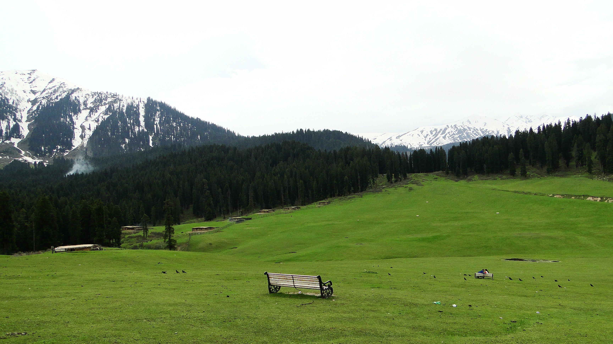
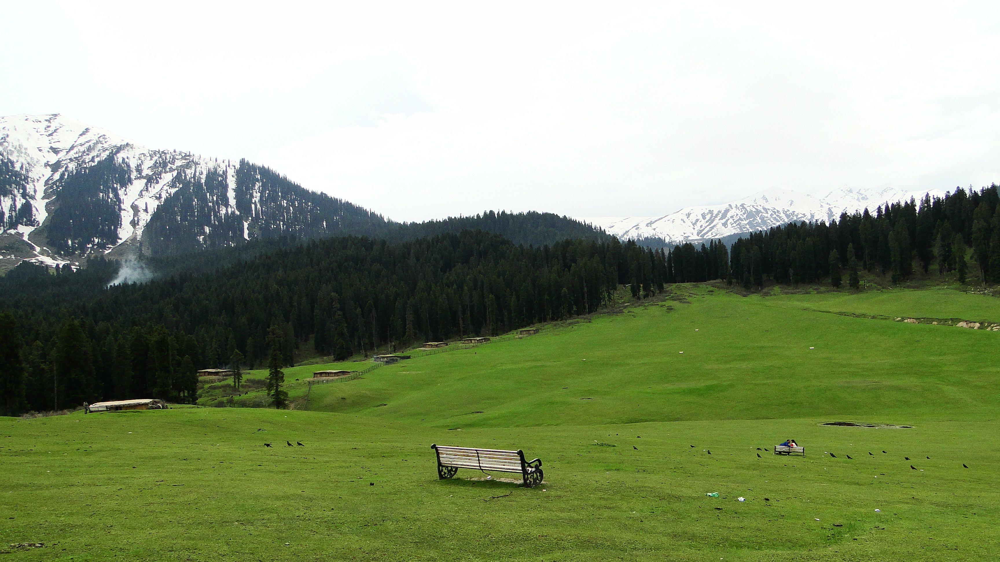

Doodhpathri, Jammu Kashmir
Doodhpathri is a tourist destination and hill station in the State of Jammu and Kashmir. It is located in Budgam district of Jammu & Kashmir. Situated at an altitude of 8,957 ft from sea level, and located at a distance of 42 km from state summer capital Srinagar and 22 km from district headquarter Budgam.
The name “doodpathri” means Valley of Milk. It is said that the famous saint of Kashmir Sheikh ul Aalam Sheikh Noor din Noorani has prayed here and once when he was in search of water in the meadows, to offer prayers, he pricked the ground with his stick to search for water and milk came out. He asked the milk that you can only be used for drinking and not performing ablution. Hearing this milk at once changed its state to water and the meadow got its name Doodpathri.
The lush green grasses over the vast meadows and silver shining streams running over the large stones further increase its beauty. Doodhpathri is sloping grassy landscapes with a diversity of multicolored flowers up to Chang. The famous Tosamaidan lies in the west of Doodpathri.